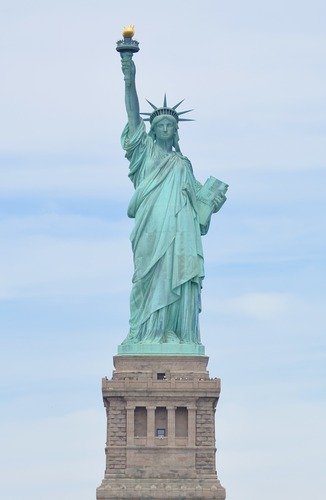
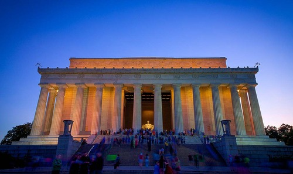

The Statue of Liberty, also known as "Lady Liberty", is one of the most well-known statues in the world. It sits upon liberty island in the heart of New York Bay, NY. The statue was designed by the french sculptor Frédéric Auguste Bartholdi from Colmar, France. It represents liberty and freedom to the people of the United States and the statue is a symbol of welcome to immigrants arriving by sea.
The Lincoln Memorial is a large classical temple style memorial located in Washington D.C. It is built in honor to Abraham Lincoln, who was the 16th president of the United States. It contains inscripted columns that have speeches like his famous Gettysburg Address. The large marble statue of Lincoln was designed by Daniel Chester French.
| Economic Impact (yearly) | Visitors (yearly) | |
| The Statue of Liberty | ~$360 million | ~3 million |
| The Lincoln Memorial | ~$200 million | ~8 million |
| Mount Rushmore | ~$550 million | ~2 million |